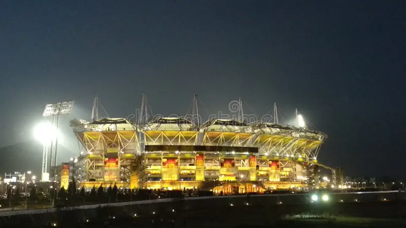

Welcome to Gahuje Cricket Stadium
More Informaction About Gahuje Cricket Stadium
It is the home ground of the Maharashtra cricket team and Maharashtra women's cricket team, it is the headquarters of the Maharashtra Cricket Association (MCA). The stadium is situated on the outskirts of city limit of Pune in Gahunje village near Mumbai–Pune Expressway.[9] It is one of the premier stadiums of the country. Before its existence, Nehru Stadium of downtown Pune was the home ground of the Maharashtra Cricket team and venue for international matches organised by MCA.[10]
Ground Informaction :
Location : Gahuje,Pune
Establishment : 2012[2]
Capacity : 42700
Owner : Maharashtra Cricket Association
Architect : Michael Hopkins,[2] Hopkins Architects[5]
Contractor : M/S Shapoorji Pallonji & Co. Ltd[6]
Operator : Maharashtra Cricket Association
End Names :
Pavilion End
Hill End
Images :
